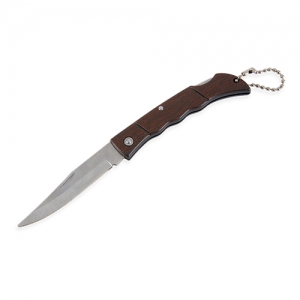

Em resumo
Diferencie agricultores, cooperativas, equipas, participantes de feiras e visitantes. Os artigos de comunicação podem apoiar uma ocasião sem substituir ferramentas ou proteção no trabalho. As famílias apresentadas são possibilidades a avaliar, não artigos obrigatórios.
Contexto em imagens

Destinatários e necessidades
Agricultores e equipas de explorações
Uma reunião, sessão de formação ou encontro técnico pode justificar apontamentos e informação de acompanhamento. A utilização em trabalho de campo é uma questão diferente, com requisitos que não se deduzem do caráter promocional.
Cooperativas, associações e organizações agrícolas
As equipas podem precisar de reunir documentação, identificar quem acolhe ou preparar uma campanha. A mensagem deve indicar o propósito da iniciativa e o contacto de informação pertinente.
Visitantes e participantes em feiras e demonstrações
Considere quem passa por um espaço informativo, quem participa numa sessão e quem entra numa exploração. O mesmo conjunto não serve necessariamente todos estes percursos.
Ocasiões, locais e épocas
Formação ou encontro técnico
A ocasião destina-se a agricultores e a formandos e pode decorrer em contextos como sala de reunião ou espaço de formação. O momento — durante as sessões e na consulta posterior — ajuda a enquadrar o objetivo de facilitar o registo de apontamentos e a organização da informação.
Feira ou mostra agrícola
A ocasião destina-se a visitantes e a equipas organizadoras e pode decorrer em contextos como recinto e espaço de atendimento. O momento — nos horários definidos pela organização — ajuda a enquadrar o objetivo de reunir informação e identificar os pontos de acolhimento.
Visita ou demonstração
A ocasião destina-se a participantes e a responsáveis pela visita e pode decorrer em contextos como percurso autorizado pela exploração. O momento — no momento de receção e no final — ajuda a enquadrar o objetivo de distinguir comunicação e recordação de materiais usados na operação agrícola.
Famílias de artigos a avaliar
Participantes em formação e reuniões
Objetivo
Um caderno e uma caneta dão suporte a exercícios e
notas. Um calendário pode manter visível a programação confirmada da associação;
não deve ser apresentado como recomendação agronómica ou calendário de
tratamentos.
Famílias a avaliar
Cadernos, Canetas, Calendários
Visitantes de feiras e ações de comunicação
Objetivo
Um saco ajuda a reunir os materiais recolhidos no
percurso. Uma garrafa pode ser considerada para uso pessoal numa jornada
prolongada, desde que se conheçam as instruções e a forma de limpeza.
Famílias a avaliar
Sacos, Garrafas, Material informativo
Equipas de receção e participantes de campanhas
Objetivo
Bonés ou vestuário com uma mensagem comum podem
apoiar identificação visual. Escolha o corte e a tabela de medidas; esta
finalidade não demonstra proteção solar, resistência ao trabalho ou aptidão para
operar equipamentos.
Famílias a avaliar
Bonés, Vestuário promocional, Artigos de
identificação
Utilização e distribuição
- Entregue materiais num ponto de receção, formação ou saída, de acordo com o percurso da atividade.
- Numa demonstração, confirme com o responsável onde é permitido parar, receber e guardar objetos. Um presente não deve interferir com uma tarefa ou equipamento.
- Separe destinatários adultos de grupos escolares ou familiares; artigos com lâminas não são materiais de distribuição geral numa visita.
- Prepare a informação por sessão e idioma quando necessário, mantendo um modo de participação sem oferta física.
O que confirmar antes de escolher
- Defina se o artigo serve numa feira, numa reunião ou durante uma tarefa. Se a utilização prevista for profissional, procure os requisitos próprios desse uso.
- Em vestuário, confirme medidas e movimentos com as camadas de roupa previstas. Não deduza resistência a sujidade, lavagem, calor ou intempéries pela aparência.
- A função de proteção exige avaliação própria. O enquadramento europeu de EPI refere produtos destinados a proteger contra riscos; não valida peças promocionais. Fonte
- Em visitas, os riscos da exploração e o acompanhamento são definidos pela organização. A orientação do HSE destaca riscos para crianças e visitantes, sem equivaler a regras portuguesas nem a aprovação do percurso. Fonte
Personalização e apresentação
- Num caderno ou calendário, dê prioridade à leitura das datas e ao espaço para notas. Revise a programação antes da impressão.
- Para identificar equipas, teste a mensagem com a peça vestida. Bordado ou impressão dependem do tecido, da construção e da área acessível; não altere zonas funcionais ou marcações necessárias.
Cuidados e limites
- Os exemplos desta página são artigos de comunicação. Ferramentas profissionais, vestuário de trabalho e EPI devem ser escolhidos através de uma avaliação separada da tarefa.
- Não atribua isolamento, proteção química, resistência mecânica ou homologação pelo nome do artigo. Uma fotografia de uma lâmina não informa sobre o seu uso permitido.
- Confirme armazenamento e distribuição com quem gere a exploração. Se o artigo não tiver utilidade fora de uma tarefa especializada, prefira uma alternativa de comunicação compatível com a ocasião.
Perguntas frequentes
Um boné promocional é equipamento de proteção?
A presença de uma mensagem ou a utilização numa exploração não demonstra essa função. Confirme a finalidade e a documentação exigida para a tarefa.
Um acessório com lâmina pode ser apresentado como ferramenta agrícola?
Não apenas pela imagem ou pelo tema da oferta. Aptidão para uma operação, limites e utilização profissional precisam de documentação específica.
Todas as visitas devem receber o mesmo conjunto?
Não. Formação técnica, visita escolar e feira aberta têm percursos, destinatários e necessidades diferentes.